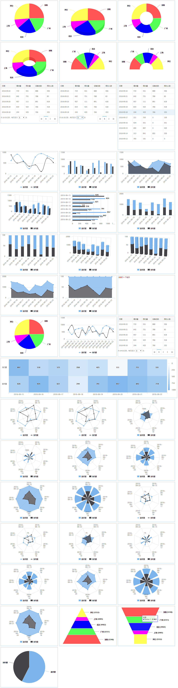

报表系统前端展现引擎
查看Demo
项目说明
例图
趋势图
表格
项目组件
项目说明
由于项目对报表展示有很大的需求 对Highchats进行了一次简单封装,只要开发人员关心后端数据的组织就可以方便输出各种图表
目前只支持chrome 其它浏览器还未做兼容处理
目前支持3种图表展示(表格table,例图normal,趋势图trend)
兼容支持
tip: 目前有测试过浏览器和版本,不代表不支持低版本或其它浏览器
Chrome 54
Opera 42
FireFox 50
IE (暂时未知 反正IE8有出现报错了)
Demo

例图(normal)
支持类型
饼图 pie,pie_3d
环形图 circular,circular_3d
扇形图 sector,circular_sector,
金字塔 pyramid
管道图 funnel
数据格式(remote返回数据)
{
"code":0,
"msg":null,
"data":{
"type":"pie",
"config":{
"field_list":{ // 字段名字描述
"sz":"深圳",
"gz":"广州",
"bj":"北京",
"sh":"上海",
"other":"其它"
},
"color_list":{ // 颜色配置(如果为空 则使用Highcharts默认)
"sz":"#FF5555",
"gz":"#55FF55",
"bj":"#0000FF",
"sh":"#FF00FF",
"other":"#FFFF55"
},
"line_list":{ // 线须配置 目前只有少数趋势图支持
}
},
"data":[ // 展现的数据格式
{
"total_num":"8070",
"sz":"5240",
"gz":"3721",
"bj":"4462",
"sh":"2095",
"other":"5552"
}
]
}
}
数据格式(使用report-data绑定)
参看文件 normal_chart.data （其实就是remote数据的data部分做了json_encode和url_encode的处理）
php:(参看data.php)
echo urlencode(json_encode($data));
趋势图(trend)
支持类型
曲图 spline,
面积图 area,bar,area_pile,area_percent
柱状图 column,column_3d,column_pile,column_pile_3d,column_percent_3d
热区图 heatmap
蛛网图 spiderweb,spiderweb_line,
spiderweb_area,spiderweb_area_pile,spiderweb_area_percent
spiderweb_column,spiderweb_column_pile,spiderweb_column_percent
极地图 polar,polar_line,
polar_area,polar_area_pile,polar_area_percent
polar_column,polar_column_pile,polar_column_percent
数据格式(remote返回数据)
{
"code":0,
"msg":null,
"data":{
"type":"bar",
"config":{
"field_list":{
"book.count":"请求量",
"book.success_count":"预约量"
},
"color_list":[],
"line_list":[]
},
"data":{
"2016-09-09":{
"book.count":"656",
"book.success_count":"661"
},
"2016-09-10":{
"book.count":"340",
"book.success_count":"994"
},
"2016-09-11":{
"book.count":"677",
"book.success_count":"386"
},
"2016-09-12":{
"book.count":"756",
"book.success_count":"126"
}
}
}
}
数据格式(使用report-data绑定)
参看文件 trend_chart.data （其实就是remote数据的data部分做了json_encode和url_encode的处理）
php:(参看data.php)
echo urlencode(json_encode($data));
表格(table)
支持类型 table
数据格式(remote返回数据)
{
"code":0,
"msg":null,
"data":{
"type":"table",
"config":{
"stat_date":{
"thText":"日期",
"width":160
},
"book.count":{
"thText":"请求量"
},
"book.success_count":{
"thText":"预约量"
},
"book.terminal_count":{
"thText":"设备总数"
},
"book.postman_count":{
"thText":"预约人数"
}
},
"data":[
{
"stat_date":"2016-09-22",
"book.count":"719",
"book.success_count":"531",
"book.terminal_count":"888",
"book.postman_count":"556"
},
{
"stat_date":"2016-09-21",
"book.count":"642",
"book.success_count":"751",
"book.terminal_count":"788",
"book.postman_count":"83"
},
{
"stat_date":"2016-09-20",
"book.count":"957",
"book.success_count":"111",
"book.terminal_count":"891",
"book.postman_count":"618"
}
]
}
}
数据格式(使用report-data绑定)
参看文件 table.data （其实就是remote数据的data部分做了json_encode和url_encode的处理）
php:(参看data.php)
echo urlencode(json_encode($data));
项目组件
jQuery（必需，本前端项目就是一个jQuery插件）
https://github.com/jquery/jquery
HighCharts (如果要展示图型的话)
https://github.com/highcharts/highcharts
gri.dataTable (如果要展示表格的话)
https://github.com/johnnyzheng/GRI
jQuery showLoading plugin(取远程数据需要转菊花的话)
https://github.com/rrx/jquery.showLoading
更新说明
2017.01.04 项目init
2017.01.05 修改变量为全局的问题，新增报表自动刷新间隔设置
2017.01.09 新增热区图,蛛网图,极地图,金字塔,管道图